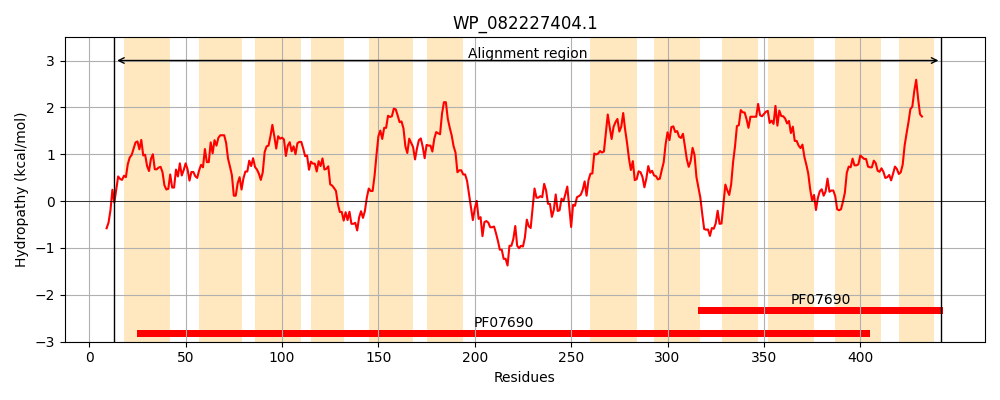
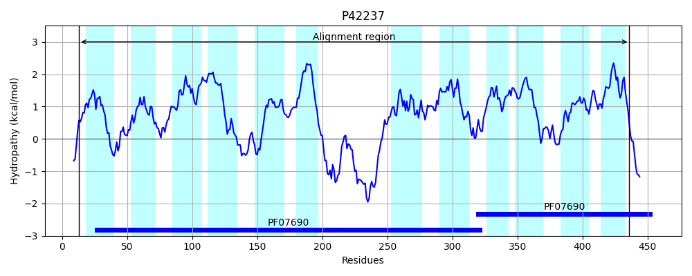
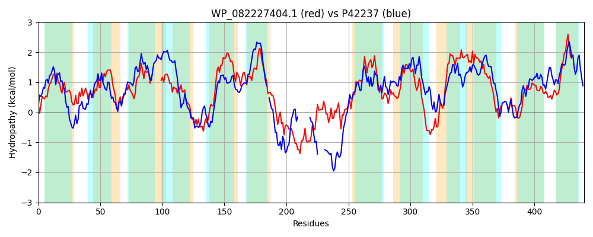

Hit Accession: P42237
Hit TCID: 2.A.1.14.1
Hit Description: gnl|BL_ORD_ID|10449 gnl|TC-DB|P42237|2.A.1.14.1 Probable glucarate transporter (D-glucarate permease) - Bacillus subtilis.
Mach Len: 440
e:0.000000
Query TMS Count : 12
Hit TMS Count: 12
TMS-Overlap Score: 11.100000
Predicted Substrates:CHEBI:14311;glucarate(2-)
BLAST Alignment:
Score: 510 , Bit scores: 201 bits, E-value: 1.5e-59, Alignment length: 440, Percentage identity: 29
Query: 13 RKTKYRFVVLTMIFLVYAINYADRTNIGAVLPFIIDEFHINNFEAGAIASMFFLGYAVSQIPAGFFIAKRGTRGLVSLSIFGFSAFTWLMGTV------SSVFGLKLVRLGLGLSEGPCPVGLASTINNWFPPKEKATATGVYIAATMFAPIIVPPLAVWIAVTWGWRWVFFSFAIPGIVAAIAWYLLVKSKPSESGFVSQSELAEINAGRESHNNSVRENILIADRFTWLDKIIRVKKMAPIDTAKGLFTSKNILGDCLAYFMMVSVLYGLLTWIPLYLVKERGFDVMSMGFVASMPCIGGFIGAIGGGWISDKVLGRRRKPTMMFTAVSTVVMMLIMLNIPASTLAVSIGLFFVGFCLNIGWPAFTAYGMAV----SDSKTYPIASSIINSGGNLGGFVAPMAAGFLLDKTGSFNSVFTYFGICAAIGLVVILFLDEP 442
+KT R+ ++ M+FLV +INYADR + + + +++ G + S F Y + Q+P G+ + + G++ +++LSIF +S FT L G + +++ L +R +GLSE P G + +WFP E+ TA+ + +A FA +I PL W+ ++GW VF I GI+ A+ W L +P + V+++ELA I G ++ D D + + + K L T++ ++G +A + + ++ Y LTW P+YLV+ RG ++ GFVAS+P + GF G + GG +SD +L + R T V + ML+ ++ S L V L F A G AV S + ++ + N+ GN+ P+ G++++ TGSFN + G A ++ L L P
Sbjct: 13 KKTSVRWFIVFMLFLVTSINYADRATLSITGDSVQHDLGLDSVAMGYVFSAFGWAYVIGQLPGGWLLDRFGSKTIIALSIFFWSFFTLLQGAIGFFSAGTAIILLFALRFLVGLSEAPSFPGNGRVVASWFPSSERGTASAFFNSAQYFAIVIFSPLMGWLTHSFGWHSVFVVMGIAGILLAVIW-LKTVYEPKKHPKVNEAELAYIEQG---------GGLISMD-----DSKSKQETESKWPYIKQLLTNRMLIGVYIAQYCITTLTYFFLTWFPVYLVQARGMSILEAGFVASLPALCGFAGGVLGGIVSDILLKKGRSLTFA-RKVPIIAGMLLSCSMIVCNYTDSAWLVVVIMSLAFFGKGFGALGWAVVSDTSPKECAGLSGGLFNTFGNIASITTPIIIGYIVNATGSFNGALVFVGANAIAAILSYLLLVGP 436 | Protein Hydropathy Plots: |
|---|
|  |  |
Pairwise Alignment-Hydropathy Plot:
|
|---|
|  |